Panduan Lengkap Teknik dan Prosedur Pemangkasan Rambut Profesional
Pemangkasan Rambut adalah suatu tindakan mengurangi kepanjangan rambut seseorang yang disesuaikan dengan bentuk wajah, rambut, profesi dan beberapa faktor pendukung lainnya (Widiarti, 2022). Sedangkan menurut Linda (2022) Pemangkasan Rambut merupakan tindakan memotong atau mengurangi panjang rambut semula menjadi model tatanan rambut yang diinginkan.
Pemangkasan Rambut adalah suatu tindakan mengurangi ukuran panjang rambut semula yang dilakukan dengan sisir, gunting dan jari-jari, guna memperindah atau mengubah bentuk pola pangkasan sebelumnya menjadi suatu model tatanan rambut yang baru sesuai dengan perkembangan tren rambut saat itu dengan melihat kesesuaian bentuk wajah klien itu sendiri (Takdir et al., 2023).
Pemangkasan Rambut merupakan kegiatan memotong rambut yang dilakukan dengan tujuan tertentu. Tujuan tersebut dapat beragam, seperti untuk memenuhi kebutuhan estetika, menjaga kesehatan rambut, serta sebagai bentuk ekspresi gaya hidup modern yang terkadang terinspirasi dari gaya rambut selebritas (Syaripuddin & Nurjanah, 2024).
Selain itu, menurut Maghfiroh et al. (2025), Pemangkasan Rambut merupakan keterampilan dasar yang harus dikuasai sebagai fondasi dalam mempelajari berbagai jenis potongan rambut. Teknik pemangkasan seperti blunt cut, point cut, slide cut, dan razor cut serta variasi sudut pemangkasan dari 0º hingga 180º memiliki pengaruh yang signifikan terhadap hasil akhir Pemangkasan Rambut, baik dari segi tekstur, volume, maupun bentuk potongan.
Sejalan dengan itu, menurut Pujiningrum (2023), Pemangkasan Rambut tidak hanya berfungsi untuk mengurangi panjang rambut, tetapi juga sebagai proses pembentukan model rambut yang memperhatikan teknik, kerapian, serta kesesuaian dengan karakteristik rambut sehingga menghasilkan tampilan yang lebih estetis dan proporsional.
Berdasarkan beberapa pendapat para ahli tersebut, dapat disimpulkan bahwa Pemangkasan Rambut merupakan kegiatan memotong atau mengurangi panjang rambut dengan menggunakan alat tertentu untuk membentuk atau mengubah model rambut sesuai dengan keinginan. Proses ini dilakukan dengan mempertimbangkan beberapa faktor, seperti bentuk wajah, jenis rambut, tren gaya rambut, serta tujuan estetika dan kesehatan rambut. Pemangkasan Rambut juga menjadi salah satu bentuk ekspresi gaya hidup yang berkembang sesuai dengan tren yang ada.
Menggunting rambut yang baik serta menghasilkan suatu hasil guntingan rambut yang sempurna dan tepat berfokus pada bagaimana seseorang memegang gunting, tentu saja didukung dengan teknik dan skill yang cukup berpengalaman. Akan tetapi faktor utama dalam Pemangkasan Rambut guna mendapatkan hasil guntingan yang baik dan sempurna selain teknik yaitu berfokus pada bagaimana seseorang dalam cara memegang gunting itu sendiri (Sari, 2023). Sebagai seorang hairstylish, nyawa untuk mendapatkan kesempurnaan dalam pengguntingan rambut selain teknik yaitu kelenturan dalam memegang gunting. Adapun cara dalam memegang gunting yaitu lemaskan tangan anda terlebih dahulu dalam memegang gunting, jangan kaku dan tegang. Perhatikan dengan seksama bentuk gunting tersebut kemudian anda akan melihat ada dua bentuk lingkaran kecil yang berguna sebagai pegangan nantinya.
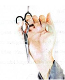
Cara Memegang Gunting Saat Hendak Menggunting
(Data Pribadi, 2026)
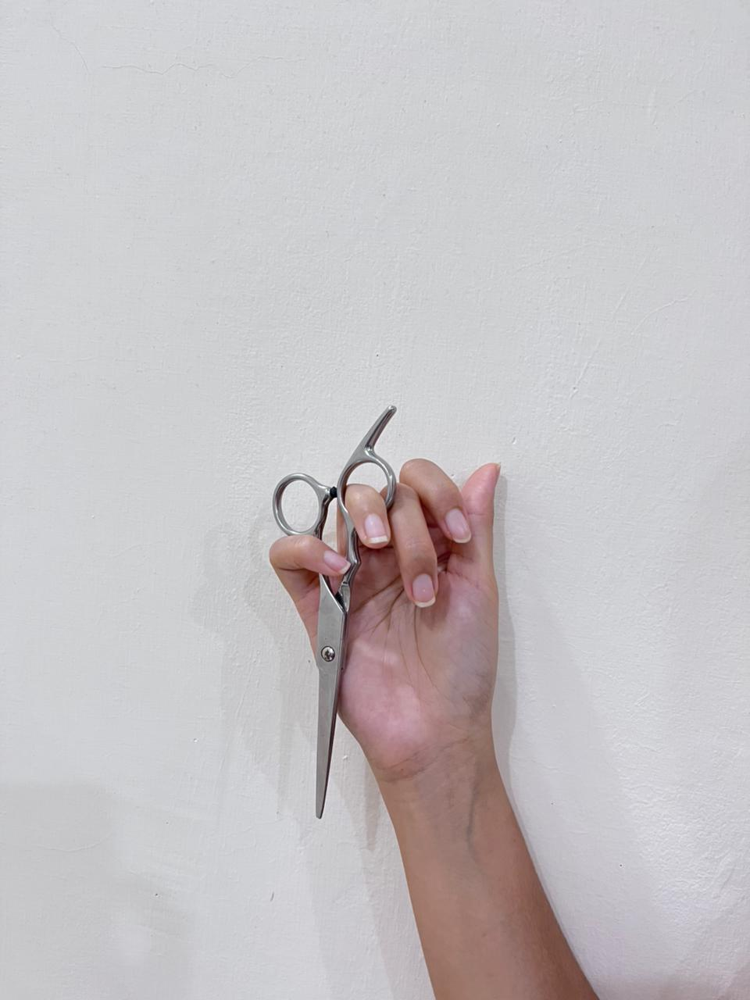
Cara Memegang Gunting Setelah Selesai Menggunting
(Data Pribadi, 2026)
Miringkan gunting, kemudian perhatikan lubang yang ada, satu lubang ada ekor besinya dan satu lubang lagi tidak ada. Masukkan jari manis kelubang yang ada ujung besinya kemudian letakkan jari kelingking diatas ujung besi dekat lingkaran jari manis tadi, sedangkan lubang satunya lagi masukkan jari jempol atau ibu jari. Selanjutnya jari telunjuk dan jari tengah diletakkan didepan lingkaran jari manis, adapun fungsi jari telunjuk dan jari tengah ini sebagai kontrol atau penguat dan arah dalam pengguntingan rambut. Selanjutnya jika posisi gunting dalam keadaan tidak menggunting batang rambut, maka tunggingkan gunting kearah bawah atau letakkan posisi gunting kearah bawah dengan cara keluarkan jari jempol dari lubang bawah kemudian putar gunting kearah bawah sembari diikuti dengan jari kelingking menggengam lubang bagian bawah jempol tadi.
Dibawah ini ada berbagai macam pola garis desain pemangkasan rambut yang terdiri dari:
Garis pola pemangkasan solid merupakan garis tarikan lurus yang mana merupakan patokan atau gaide line untuk terjadinya hasil pemangkasan rambut solid, setiap section demi section rambut yang diambil mulai dari bawah hingga atas membentuk garis solid.
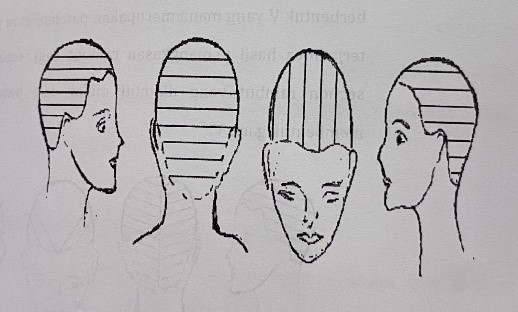
Garis Desain Pola Pangkasan Solid
(Data Pribadi, 2026)
Garis desain pola pemangkasan Oval merupakan garis tarikan berbentuk oval or melengkuk kebawah yang mana merupakan patokan atau gaide line untuk terjadinya hasil pemangkasan rambut Oval, setiap section demi section rambut yang diambil mulai dari bawah hingga atas membentuk garis oval atau melengkuk kebawah.
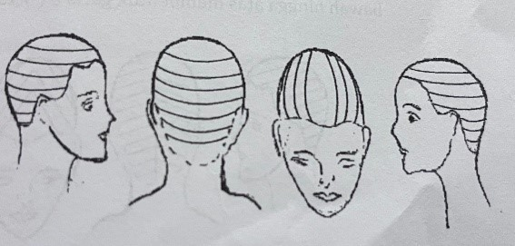
Garis Desain Pola Pangkasan Oval
(Data Pribadi, 2026)
Garis desain pola pemangkasan Segi merupakan garis tarikan berbentuk V yang mana merupakan patokan atau gaide line untuk terjadinya hasil pemangkasan rambut segi, setiap section demi section rambut yang diambil mulai dari bawah hingga atas membentuk garis V.
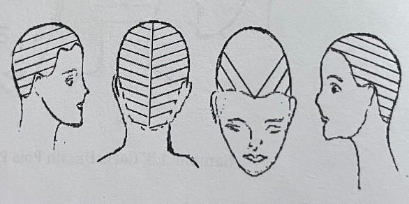
Garis Desain Pola Pangkasan Segi
(Data Pribadi, 2026)
Struktur pemangkasan rambut merupakan rancang desain dalam suatu pemangkasan dimana tergambar tarikkan batang rambut mulai dari daerah interior maupun eksterior sehingga menggambarkan hasil dari kerangka pemangkasan yang dilakukan.
Menurut pola pemangkasan datar dibagi menjadi tiga macam, yakni:
Pemangkasan dengan garis pola pemangkasan paralel dengan hasil akhir pangkasan berupa garis lurus, sama panjang antara rambut belakang, samping dan depan.
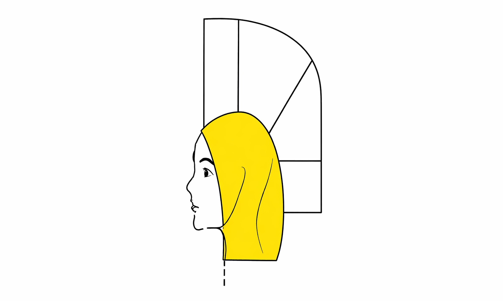
Struktur Pemangkasan Rambut Solid
(Data Pribadi, 2026)
Pemangkasan rambut ini menghasilkan pemangkasan pada bagian depan dan samping tampak lebih pendek dari bagian belakang, sehingga berbentuk "U".
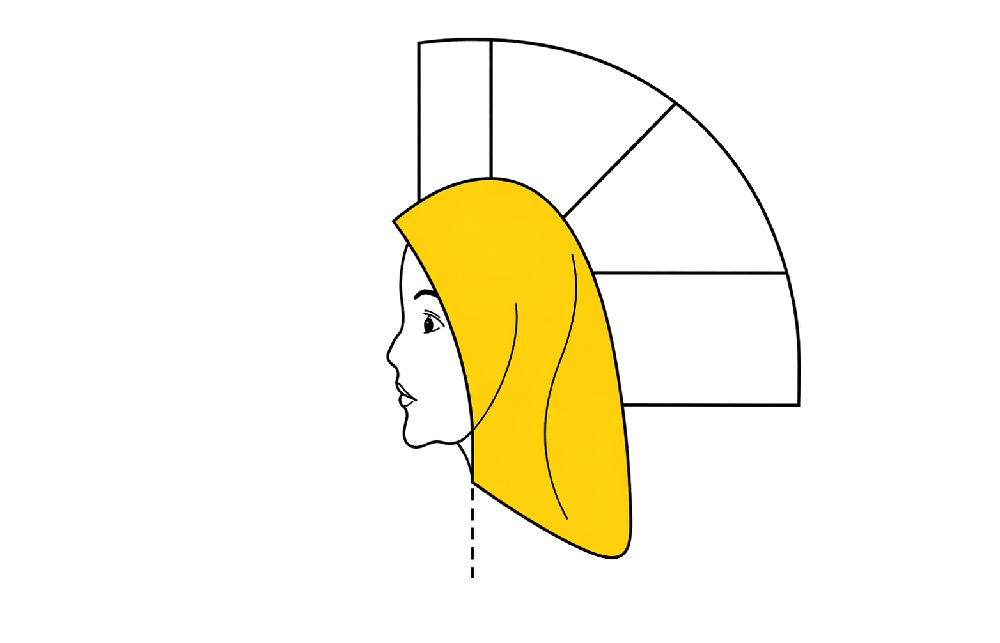
Struktur Pemangkasan Rambut Oval
(Data Pribadi, 2026)
Pemangkasan rambut ini menghasilkan pemangkasan rambut pada bagian depan dan samping pendek dan pada bagian belakang panjang meruncing sehingga kalau disatukan penataan rambut kebelakang semuanya tanpak seperti berbentuk garis "V".
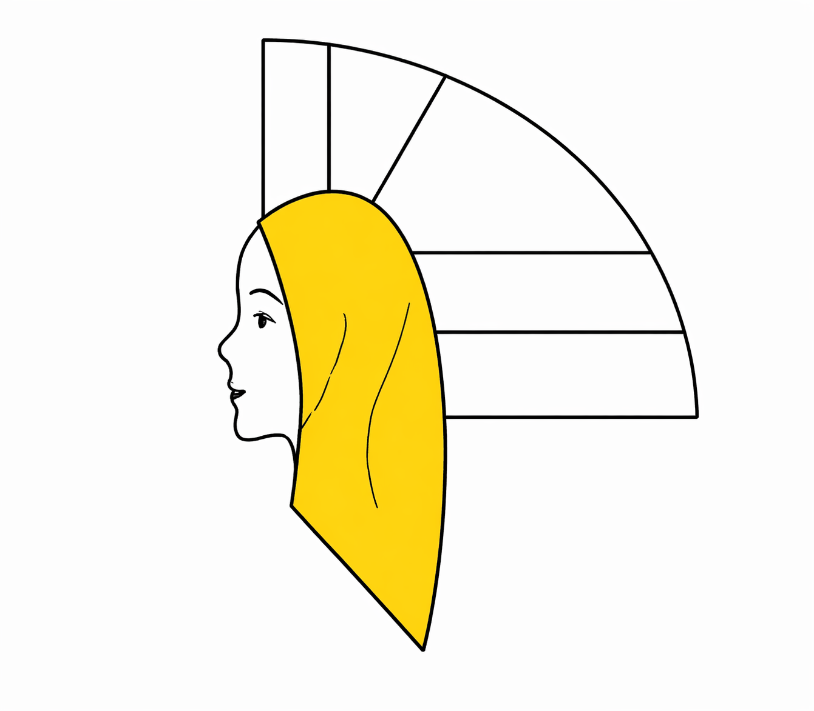
Struktur Pemangkasan Rambut Segi
(Data Pribadi, 2026)
Berikut adalah alat yang digunakan dalam Pemangkasan Rambut antara lain:
| No | Nama Alat | Gambar | Kegunaan |
|---|---|---|---|
| 1 | Sisir Pangkas Rambut |
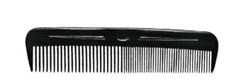 Sisir Pangkas |
Berfungsi untuk membantu proses pengambilan rambut step by step rambut yang akan di gunting. |
| 2 | Gunting Pemangkasan Rambut |
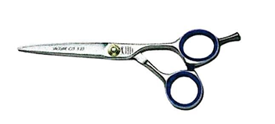 Gunting Pemangkasan |
Alat mutlak berbahan stainless steel. |
| 3 | Jepit Bebek |
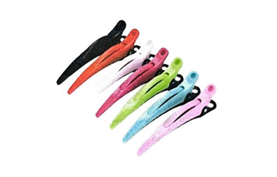 Jepit Bebek |
Berfungsi untuk menjepit bagian rambut yang hendak digunting, membantu dalam membuat desain pola Pemangkasan Rambut. |
| 4 | Kain Atau Cap Pemangkasan Rambut |
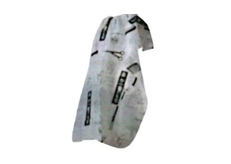 Cape Pangkas |
Melindungi pakaian dari sisa guntingan rambut dan agar pakaian tidak basah saat rambut dibasahi. |
| 5 | Botol Spryer |
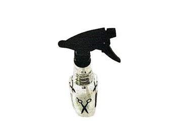 Botol Spryer |
Wadah air untuk membasahi batang rambut pelanggan guna mempermudah proses pemangkasan dan mendapatkan hasil yang rapi. |
| 6 | Sikat/Brush Pembersih Pemangkasan Rambut |
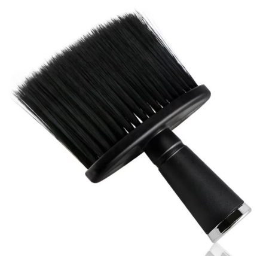 Sikat Pembersih |
Menghilangkan atau mengangkat sisa-sisa rambut yang telah digunting pada pundak, leher, dan pakaian. |
| 7 | Sisir Setengah Blow |
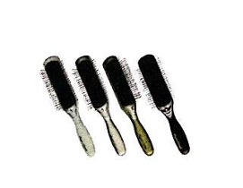 Sisir Setengah Blow |
Dipergunakan untuk menata atau mengeblow rambut setelah digunting guna melihat hasil desain pemangkasan. |
| 8 | Sisir Blow Penuh |
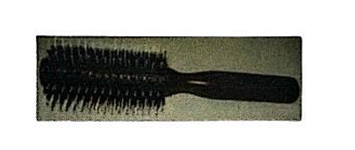 Sisir Blow Penuh |
Berfungsi untuk menata atau mengeblow rambut dengan hasil yang lebih maksimal. |
| 9 | Hair Dryer |
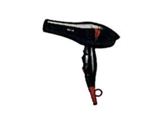 Hair Dryer |
Mengeringkan batang rambut dan membantu membentuk batang rambut sesuai penataannya. |
| 10 | Catokan |
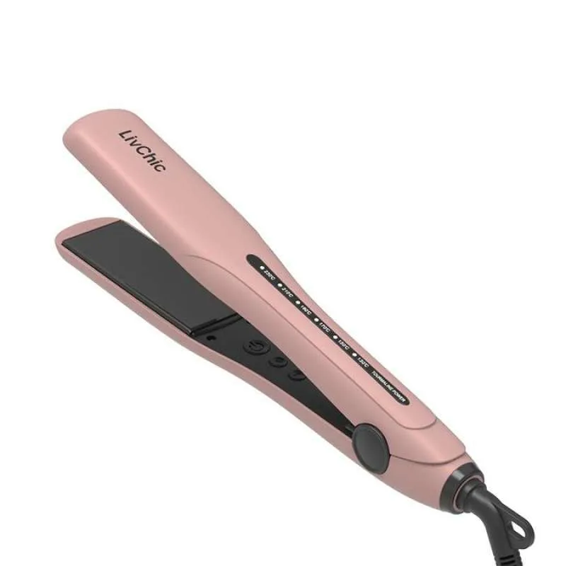 Catokan |
Digunakan untuk meluruskan atau membentuk rambut agar terlihat lebih rapi dan berkilau setelah pemangkasan. |
Berikut adalah kosmetik yang digunakan dalam proses Pemangkasan Rambut:
| No | Nama Kosmetik | Gambar | Kegunaan |
|---|---|---|---|
| 1 | Shampoo |
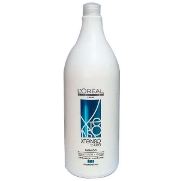 Shampoo |
Membersihkan kulit kepala dan rambut dari kotoran sebelum pemangkasan. |
| 2 | Conditioner |
Conditioner |
Melembutkan rambut agar lebih mudah disisir dan diatur saat proses pemangkasan. |
| 3 | Hair Tonic |
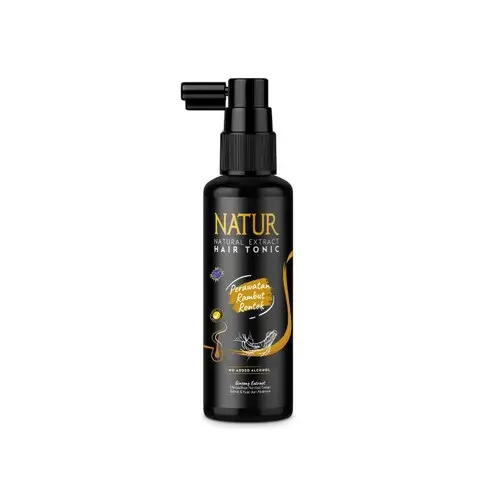 Hair Tonic |
Memberikan nutrisi pada kulit kepala dan memperkuat akar rambut setelah proses pemangkasan. |
Sanitasi peralatan sangat perlu diperhatikan untuk menjaga kebersihan dan keawetan alat kerja:
Perlengkapan kerja seperti cape pangkas dan handuk harus selalu dalam keadaan bersih. Setelah digunakan, perlengkapan kain harus dicuci dan dikeringkan dengan benar sebelum digunakan kembali pada klien berikutnya.
Hal yang perlu dipersiapkan adalah mempersiapkan segala sesuatu yang diperlukan dalam melakukan Pemangkasan Rambut baik ruang kerja dan peralatannya, bahan, persiapan klien dan persiapan diri pribadi (Widiarti, 2022). Adapun hal-hal yang perlu dipersiapkan yaitu :
Persiapan area kerja dimaksudkan untuk menyiapkan kondisi lingkungan kerja yang bersih dan terawat. Beberapa hal yang perlu diperhatikan ialah:
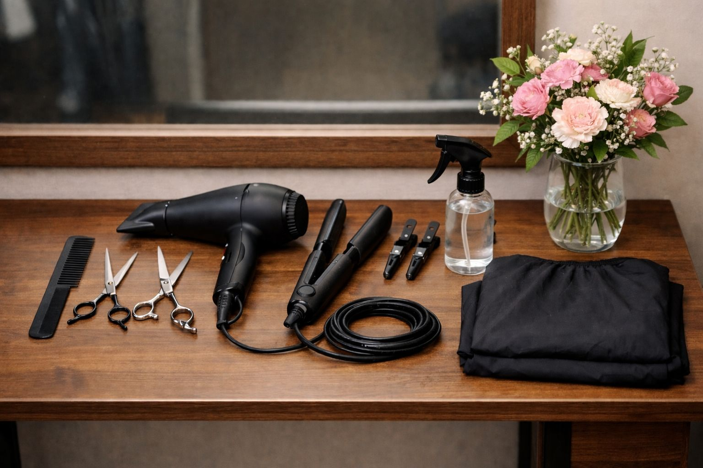
Persiapan Area Kerja
(Data Pribadi, 2026)
Seorang hairstylist juga harus mempersiapkan dirinya untuk bertemu dengan pelanggan. Hal yang perlu dipersiapkan hairstylist adalah:
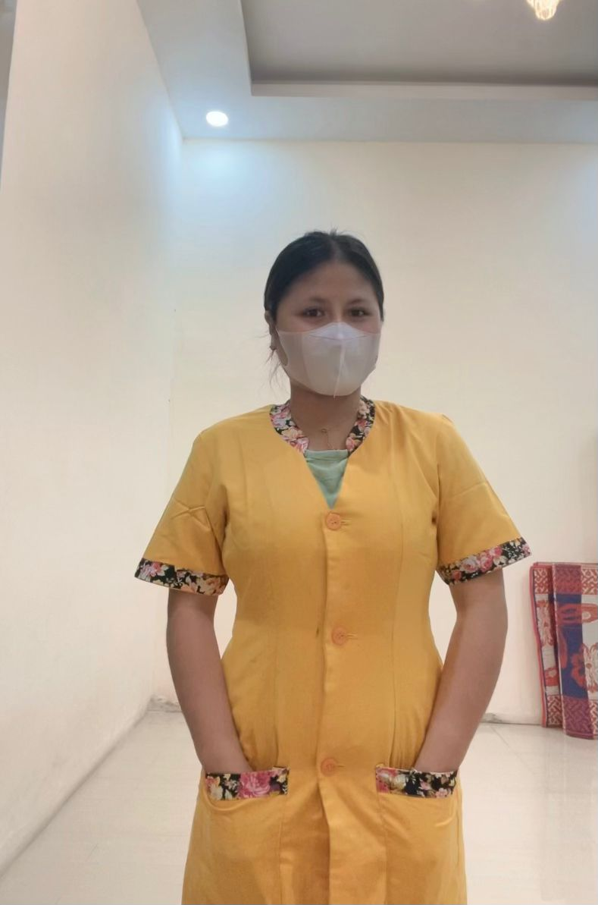
Persiapan Pribadi
(Data Pribadi, 2026)
Tujuan dilakukannya persiapan ini agar memudahkan hairstylish dalam melakukan pekerjaanya serta memberikan kenyamanan dan keamanan bagi client itu sendiri. Adapun yang perlu diperhatikan yaitu:
Persiapan Client
(Data Pribadi, 2026)
Basahi rambut terlebih dahulu, kemudian parting rambut menjadi 4 bagian, dua pada bagian depan dan dua pada bagian belakang. Pada bagian depan garis tengah ditarik menyesuaikan belahan rambut model.
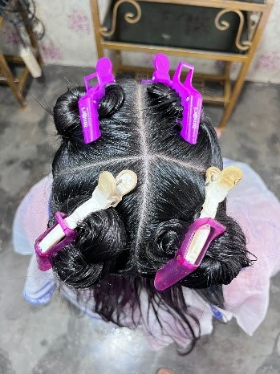
Basahi dan Parting Rambut
(Data Pribadi, 2026)
Tahap pertama dimulai dengan membuat garis pola pangkasan Oval "Garis melengkung berbentuk U" pada bagian belakang. Pastikan titik puncak U antara kiri dan kanan sama letaknya.
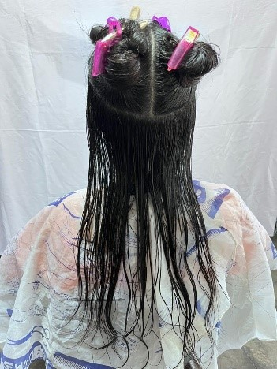
Pola Oval Belakang
(Data Pribadi, 2026)
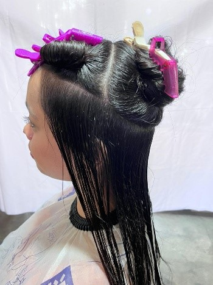
Pola Oval Samping Kiri
(Data Pribadi, 2026)
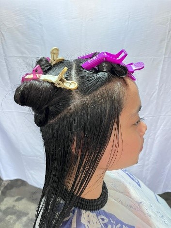
Pola Oval Samping Kanan
(Data Pribadi, 2026)
Setelah pola terbentuk garis pangkasan/desain line, section pertama bagi rambut menjadi tiga bagian.
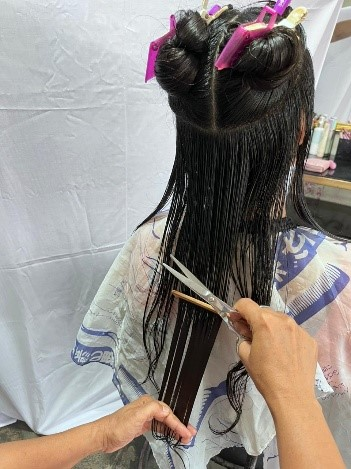
Membagi Section Pertama
(Data Pribadi, 2026)
Pada bagian tengah lakukan penyisiran tegak lurus tanpa ada pengangkatan dan lakukan pengguntingan rambut ± 5 cm dengan cara penjepitan rambut antara jari telunjuk dan jari tengah: Pastikan posisi tangan kiri jari telunjuk dan jari tengah sejajar mengikuti garis pola pangkasan/desain line "U".
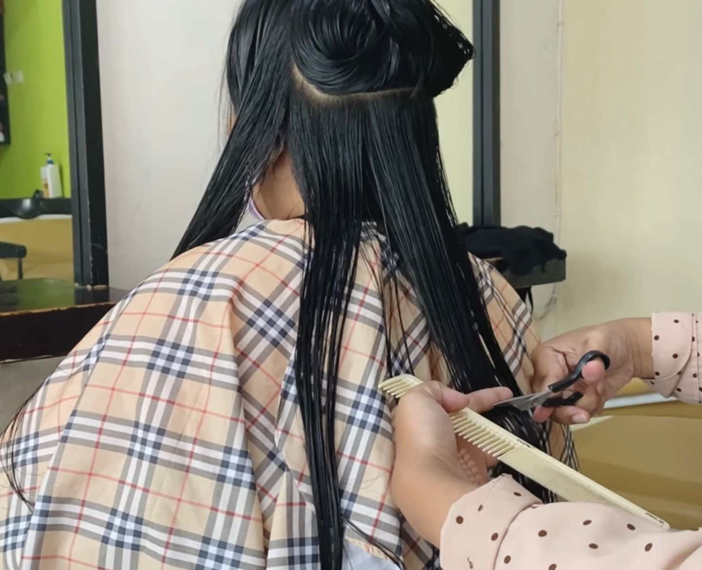
Pengguntingan Bagian Tengah
(Data Pribadi, 2026)
Dilanjutkan dengan pengguntingan rambut pada bagian samping kiri ditarik sedikit kearah kiri tanpa pengangkatan dengan arah jari telunjuk dan jari tengah mengarah/mengikuti garis pola pangkasan yang telah dibuat.
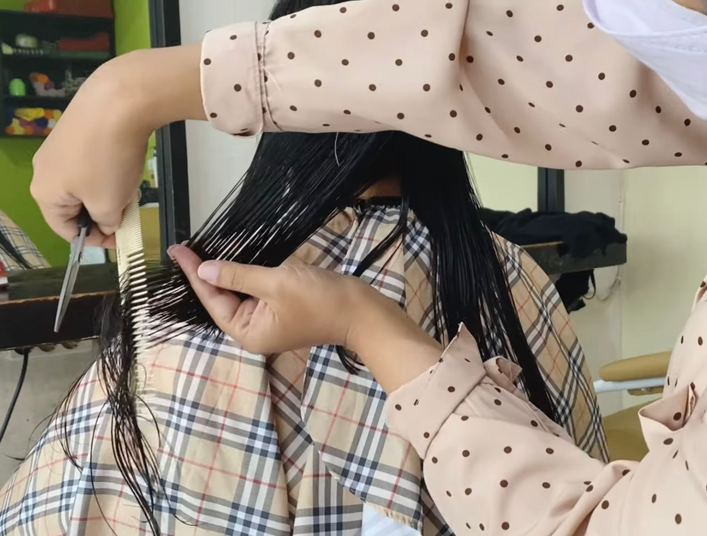
Pengguntingan Bagian Samping Kiri
(Data Pribadi, 2026)
Begitu juga dengan bagian samping kanan, rambut disisir dan diarahkan kekanan dengan arah jari telunjuk dan jari tengah mengarah/mengikuti garis pola pangkasan.
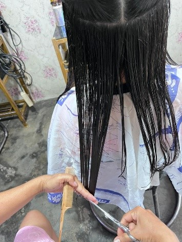
Pengguntingan Bagian Samping Kanan
(Data Pribadi, 2026)
Setelah section pertama selesai digunting berbentuk U, lakukan pengecekan rambut keseimbangan/kepanjangan dengan cara menarik ujung kedua rambut antara kiri dan kanan dibawa ketengah.
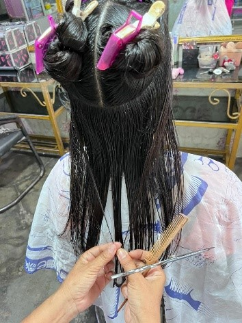
Pengecekan Keseimbangan Rambut
(Data Pribadi, 2026)
Dilanjutkan dengan pengambilan section kedua dengan ukuran section ± 3 cm. Pengambilan section kedua sama dengan section pertama yaitu dengan membuat garis pola pangkasan oval "U". Setelah section kedua selesai, dilanjutkan dengan section ketiga dengan langkah pengguntingan yang sama seperti section pertama dan kedua. Lakukan pengguntingan rambut pada bagian belakang hingga selesai persectionnya.
Lakukan pengguntingan rambut pada bagian depan dengan mengikuti patokan pengguntingan pertama hingga selesai tergunting semua.
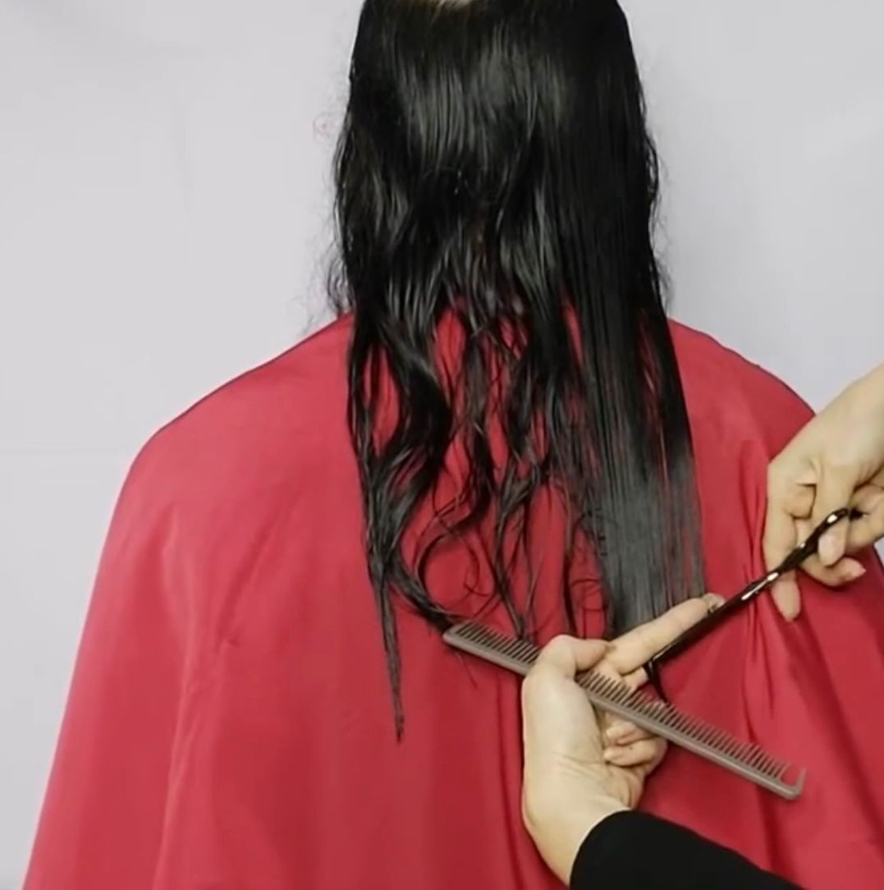
Pengambilan Section Kedua
(Data Pribadi, 2026)
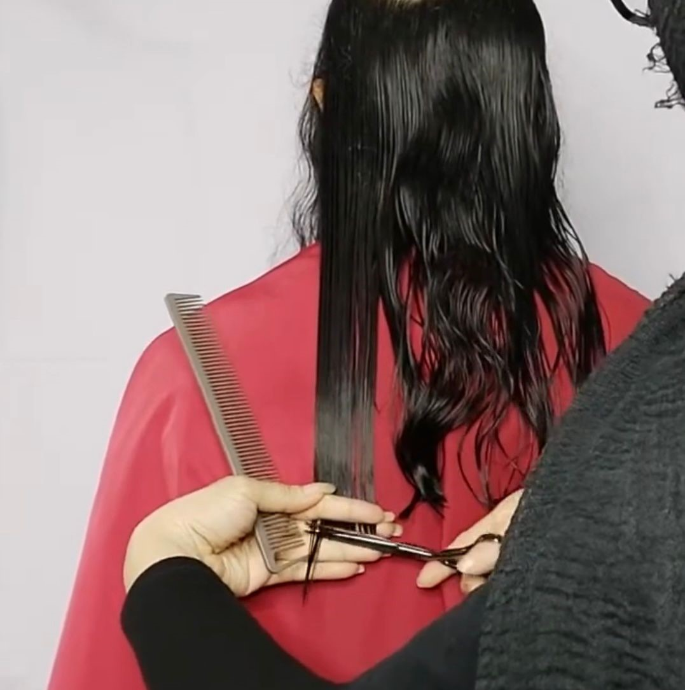
Proses Pengguntingan Per Section
(Data Pribadi, 2026)
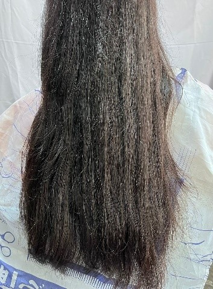
Before
(Data Pribadi, 2026)
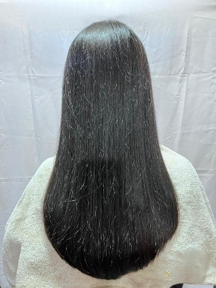
After
(Data Pribadi, 2026)
Berdasarkan langkah kerja Pemangkasan Rambut pola oval yang telah dijelaskan, dapat disimpulkan bahwa proses Pemangkasan Rambut dilakukan melalui tahapan yang sistematis dan terstruktur. Proses tersebut dimulai dari tahap persiapan seperti menyisir rambut dan menentukan garis parting, kemudian dilanjutkan dengan pembagian rambut menjadi beberapa bagian untuk memudahkan proses pemangkasan pada setiap section. Setiap bagian rambut dipangkas secara bertahap dengan teknik dan pola tertentu agar menghasilkan bentuk pangkasan yang rapi dan seimbang.
Setelah seluruh proses pemangkasan selesai, dilakukan pengecekan kembali untuk memastikan kesesuaian panjang rambut pada setiap sisi. Tahap akhir dilanjutkan dengan penataan rambut melalui proses blow agar hasil pemangkasan terlihat lebih rapi dan indah. Dengan mengikuti langkah kerja yang tepat dan prosedur yang sistematis, Pemangkasan Rambut pola oval dapat menghasilkan bentuk potongan rambut yang sesuai dengan bentuk wajah serta memberikan hasil yang lebih maksimal.
Materi Pemangkasan Rambut Dasar telah selesai dipelajari